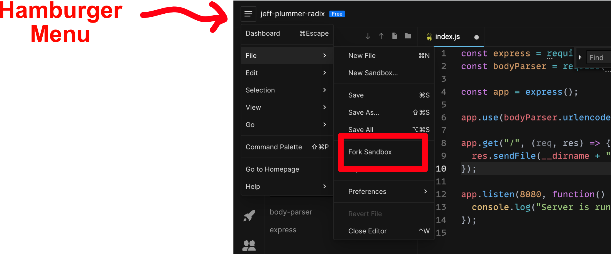

HIGH LEVEL INSTRUCTIONS
- Fork the project
- Run the project
- Use the API
- Refactor the project
-
REMEMBER TO SUBMIT THE PROJECT BACK ON CODERBYTE
FORK THE PROJECT FIRST
-
Create an account on CoderSandbox.io so that you can save your final project
online
-
Fork this Sandobox from the Hamburger menu -> File -> Fork Sandbox

-
The new fork will have a new URL. You will submit this URL
RUN THE PROJECT
- The project should start automatically, and restart after all edits
-
If project fails to start, create a new terminal in the terminal widget of
this page, and type 'yarn start'
- Run 'yarn test' to run unit tests
USE THE API
The api is a very simple CRUD api for users.
-
Copy the base url of your project (e.g. https://djwih.sse.codesandbox.io/ is
the base url for the original project, it will be different for your forked
project)
-
Using 'curl' or a tool like 'Postman' you can call your api (e.g.
https://djwih.sse.codesandbox.io/initdata to initialize your data)
REFACTOR THE PROJECT
This CRUD USERS API works, but it does not follow best practices. Refactor the
codebase and the api to be as clean as possible. Guidelines:
-
YOU CAN CHANGE ANYTHING! Your API does not need to be backwards compatible.
Assume no one is using it yet, and it is safe to change all aspects of this API.
-
Best QualityYour goal is to create a simple CRUD USERS API that is coded to your highest
standard of quality.
SUBMIT THE PROJECT
REMEMBER TO SUBMIT YOUR PROJECT!!!
Copy your browser URL to your sandbox into the assessment page on coderbyte AND CLICK THE SUBMIT BUTTON.
We will review your source code looking for coding best practices.